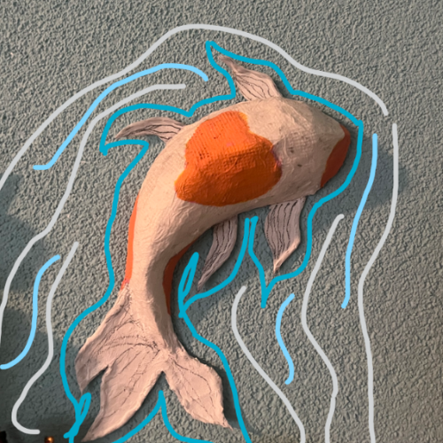
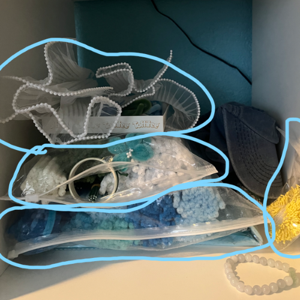
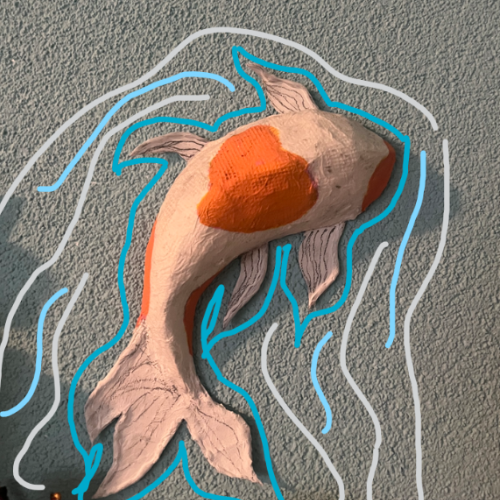
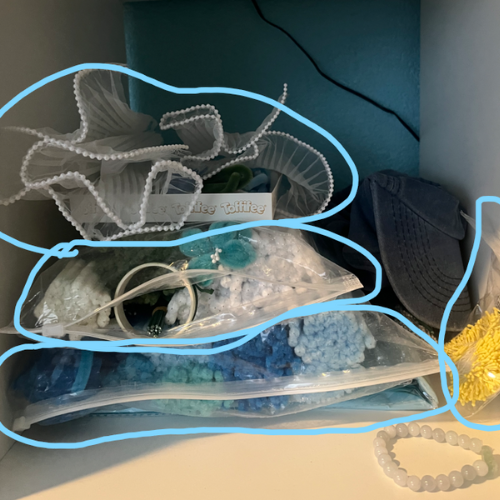
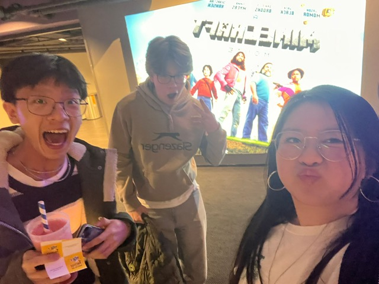
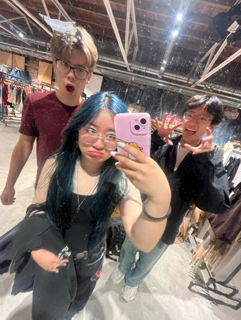

⊹ ࣪ ˖ Videogames ⊹ ࣪ ˖


Mijn Favourite games op dit moment zijn:
Genshin Impact, Honkai: Star Rail, Valorant en Stardew Valley.
Ik speel deze spellen al sinds het begin dat ze uitkwamen (behalve Stardew Valley) en ben ze ook blijven gaan spelen sinds ik ze heel leuk vind!
Genshin vind ik een onzettend leuk spel sinds het een openworld game is, je kan in het spel van alles doen, ook is het super leuk omdat je het samen met vrienden kan spelen via coop.
Honkai vind ik een leuk spel sinds ik zeer in het verhaal zit en omdat het in een soort van multiverse van Genshin zit, naast dat is het een turnbased game inplaats van een openworld game als genshin dus daar geniet ik ook van.
Valorant vind ik een leuk spel omdat het een schietspel is die ik vaak met vrienden samen speel waardoor het leuker en chaotiser is.
Stardew Valley is een cozy spel waarin je gewoon een boederij runt, je kan het alleen spelen of met vrienden waardoor de ervaring kan verschillen (in een goede manier natuurlijk).
Hieronder nog wat spellen dat ik graag speel:
- Fields Of Mistria
- Roblox
- Minecraft
- The Legend Of Zelda (love the franchise)
- Animal Crossing: New Horizons
- Ik heb er nog zoveel meer, maar anders komt hier geen eind aan...
⊹ ࣪ ˖ Knutselen ⊹ ࣪ ˖
 



Een ander hobby dat ik zeer leuk vind is knutselen!
Ik heb verschillende projecten gedaan zoals: Papier mache koi vis, Customized figure kast, Origami rozen , crochet headphone decoratie en pipe cleaner flowers gemaakt.
(fotos van de projecten staan in de fotos boven en ook de pipe cleaners voordat ik ze had gebruikt)
Ik vind knutselen wel leuk omdat je er creatief mee kan zijn en je er ook leuke dingen mee kan maken die je kan gebruiken als decoratie in je kamer of als cadeau voor vrienden en familie.
Ik ben heel blij met alles wat ik tot nu toe heb gemaakt, wel moet ik nog oefenen met het crocheten maar voor de rest is het super leuk om te doen!
Fun fact, Een week geleden hebben Yiting, Laura en ik in de foto linksboven, een bouqet gemaakt van pipe cleaners voor een verjaardag d:
⊹ ࣪ ˖ Overig ⊹ ࣪ ˖
 
Ik zat op piano voor 8-9 jaar! Heb het 2 jaar geleden laten vallen sinds ik niet zoveel tijd meer had maar ik wil het in de toekomst wel weer oppakken.
Ik zit op scouting naaldwijk, ik zit er nu eigenlijk alleen nog op omdat Floyd er ook op zit T-T
De fotos dat ik op piano zit heb ik momenteel niet en fotos van de scouting zijn niet al te best dus vandaar deze 3 fotos 0-0